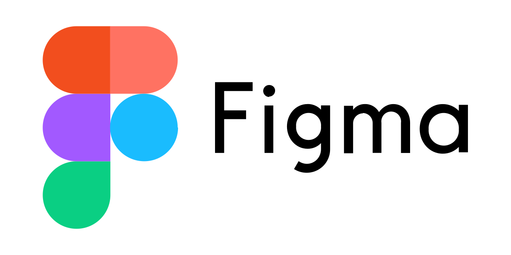

Welkom op de Cheese Valley site!
Hier op de officiële website van Cheese Valley kunt u alles vinden over het spel.

Het Spel
Komt u erachter dat uw kind moeite heeft met het leren van de topografie van Nederland? Bang dat uw kind
niet op een leuke manier de Nederlandse kaart en steden leert? Geen zorgen want wij hebben de oplossing voor
u en uw kind, namelijk een fantasy video game genaamd Cheese Valley!
Cheese Valley is een spel waar uw kind enorm veel plezier krijgt met het leren van topografie.
Jij, de speler, bent een echte ontdekkingsreiziger want je hebt al héél veel gebieden ontdekt en er
landkaarten van gemaakt zoals echte ontdekkingsreizigers dat doen. Er is echter nog een onbekend gebied en
jij komt erachter dat het onbekende gebied geterroriseerd wordt door de vijandelijke Orcs en Dark Elves.
Kies daarom je team en versla de vijand in de bezette gebieden om de bewoners te bevrijden en het
onbekende gebied in kaart te brengen.
Lukt het jou om het onbekende gebied volledig te ontdekken en de vijand te verslaan?
Hoe werkt het spel?
De speler kiest eerst een factie, de keuzes zijn Elven, Dwergen en Monniken. Elke factie correspondeert met
een bepaalde moeilijkheidsniveau dit betekent dat de Elven een makkelijk niveau is en de Monniken een
moeilijk niveau. Een moeilijkere niveau betekent ook extra uitdagingen zoals minder bedenktijd voor het
beantwoorden van een vraag, moeilijkere vragen en minder/geen extra pogingen om een vraag correct te
beantwoorden. De vragen kunnen variëren van het raden van de silhouet van een specifieke provincie tot het
correct beantwoorden van de vlag van een hoofdstad.
Wanneer de speler het spel start dan staat een incomplete kaart van Nederland op het scherm weergegeven.
Een willekeurig gebied licht op en de speler kan dat gebied bevrijden. Om dat gebied te bevrijden moet je
binnen de tijd een vraag correct beantwoorden, is het gelukt dan heeft de speler dat gebied verdedigd tegen
de vijand en wordt dat gebied in kaart gebracht, wanneer de speler het incorrect heeft beantwoord dan is dat
gebied in handen gevallen van de vijand. Dit is echter niet de enige functie.
De vijand kan namelijk gebieden terug veroveren. Dit gebeurt op een willekeurig moment in het spel en de
vraag is dan iets moeilijker! Denk bijvoorbeeld aan de hoofdstad van de provincie of de vlag van de
provincie. Heb je de vraag correct beantwoord? Dan heb je het gebied verdedigd tegen de vijand. Als je het
incorrect hebt beantwoord dan gaat dat gebied terug naar de vijand.
Heb je het correct beantwoord? Dan heb je het gebied verdedigd tegen de vijand. Als je het incorrect hebt beantwoord dan
gaat dat gebied terug naar de vijand.
Prototype
Benieuwd hoe dit spel ongeveer speelt? Dat kan hier! Er is in FIGMA namelijk een speelbare prototype gemaakt.
Het is nog erg minimaal qua styling en functionaliteiten maar de basis van het spel is uitgewerkt.
Speel het prototype via de onderstaande link!
Wanneer je op de link klikt en het een nieuw venster opent
dan kom je op het startscherm van het prototype en kan je gelijk beginnen!
Klik hier voor de link!

Aanleiding
Cheese Valley is gemaakt als schoolproject voor de opleiding Creative Media & Game Technologies.
Het spel is gemaakt door 4 enthousiaste studenten tussen de 19 en 22 jaar oud. Het is ons eerste eigen spel,
hopelijk heeft u en/of uw kind hier veel leerplezier mee!
Benieuwd naar de opleiding? Klik dan op het CMGT logo.

Het Team
Zoals al eerder vernoemd is het spel gemaakt door 4 jonge studenten.
Benieuwd naar de sociale media van de studenten of vragen aan een specifieke student? Hieronder staat alles vermeld!
Jasmine Lin
Instagram: Jasascript
Linkedin: Jasmine Lin
Colin Patty
Instagram: codes_by_colin
Linkedin: Colin Patty
Miso Sahan
Instagram: misoftware_
Linkedin: Miso Sahan
Gianni Mendonça Semedo
Instagram: Programeneer
Linkedin: Gianni Mendonça Semedo